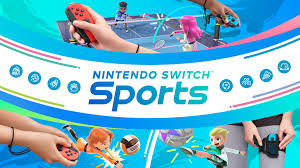
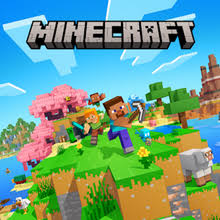
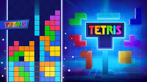

On this website, we are going to show you what the top 5 best selling games of all time are! These are numbers based off of physical copies sold. Enjoy!
To skip to the list number, press the links below
TOP 5 BEST SELLING GAMES OF ALL TIME
There are a lot of games out there, but every once in a while we get an absolute behemoth of a release that can be so fun, so addictive, and so compelling that they can spark a following that inspires a culture. Today, we are going to go through the top 5 best selling games of all time!
5. PUBG - 75 Million
PUBG: Battlegrounds (previously known as PlayerUnknown's Battlegrounds) is a 2017 battle royale video game published by Krafton, and developed by Krafton's PUBG Studios. The game, which was inspired by the Japanese film Battle Royale (2000), is based on previous mods created by Brendan "PlayerUnknown" Greene for other games, and expanded into a standalone game under Greene's creative direction. Played from either a third-person or first-person perspective, up to one hundred players parachute onto an island where they are tasked to scavenge for weapons and equipment to kill other players while avoiding getting killed themselves. The available safe area of the game's map decreases in size over time, directing surviving players into an ever-tightening space to force encounters.
4. Wii Sports - 82.9 Million

Wii Sports is a 2006 sports simulation video game developed and published by Nintendo for the Wii video game console. The game was released in North America along with the Wii on November 19, 2006, and in Japan, Australia, and Europe the following month. It was included as a pack-in game with the console in all territories except Japan, making it the first sports game included with the launch of a Nintendo system since Mario's Tennis for the Virtual Boy in 1995. The game was later released on its own as part of the Nintendo Selects collection of games.
3. GTA V - 200 Million+
Grand Theft Auto V is a 2013 action-adventure game developed by Rockstar North and published by Rockstar Games. It is the seventh main entry in the Grand Theft Auto series, following 2008's Grand Theft Auto IV, and the fifteenth instalment overall. Set within the fictional state of San Andreas, based on Southern California, the single-player story follows three protagonists—retired bank robber Michael De Santa (Ned Luke), street gangster Franklin Clinton (Shawn Fonteno), and drug dealer and gunrunner Trevor Philips (Steven Ogg), and their attempts to commit heists while under pressure from a corrupt government agency and powerful criminals. Players freely roam San Andreas's open world countryside and fictional city of Los Santos, based on Los Angeles.
2. Minecraft - 300 Million

Minecraft is a 2011 sandbox game developed and published by Swedish video game developer Mojang Studios. Originally created by Markus "Notch" Persson using the Java programming language, the first public beta build was released on 17 May 2009. The game would be continuously developed from then on, receiving a full release on 18 November 2011. Afterwards, Persson left Mojang and gave Jens "Jeb" Bergensten control over development. In the years since its release, it has been ported to several platforms, including smartphones, tablets, and various video game consoles. In 2014, Mojang and the Minecraft intellectual property were purchased by Microsoft for US$2.5 billion. Minecraft is the best-selling video game of all-time, with over 300 million copies sold and nearly 170 million monthly active players as of 2024.
1. Tetris - 520 Million

Tetris is a puzzle video game created in 1985 by Alexey Pajitnov, a Soviet software engineer. In Tetris, players complete lines by moving tetrominoes, which descend onto the playing field. The completed lines disappear and grant the player points, and the player can proceed to fill the vacated spaces. Though the core gameplay has remained consistent, specific game mechanics between different Tetris variants have differed, with some changes becoming standard overtime. Versions have been released for personal computers (PC), consoles, and mobile platforms.